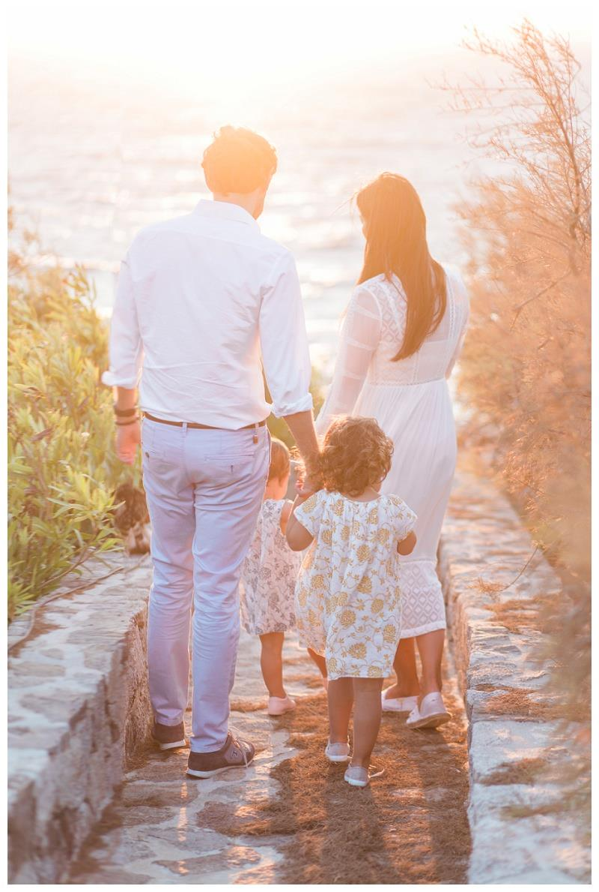

Travel
Family Photography in Greece
3 October 2015

Is anyone else missing summer as much as I am? The images from this family photo session take me back to the sunny, warm (windy!) days in Mykonos where I had the pleasure of photographing this lovely bunch. Mom happens to be a very good friend of mine, as well as a talented designer and just all around amazing, thoughtful, caring, and gracious person.
She’s also stunningly beautiful– (do you recongnize her from any of my other styled shoots ;) ) Dad is equally cool– so easygoing with a great sense of humor and definitely the kind of guy you would be delighted to be sat next to at a dinner party because you know the conversation will never be dull!
The two girls are absolute dolls–with their sweet little french/british accents you just want to eat them up! Oliver has a little crush on their eldest and I’m happy to foster the young romance ;) We did this session in just under 15 minutes as it was right about baby’s dinnertime and the wind was about to blow us into the ocean, , but I’m still so pleased with the images we were able to create.
And that light!!!! I can’t wait to be back in Greece to photograph two weddings in 2016 (and if I have my way, for a family holiday too!). Enjoy!
In case you haven’t noticed I love travelling! I’m available for family photo commissions throughout throughout the UK and Europe!
To book your family photography in London or family photography in Greece or anywhere else in Europe, please email me at amy@fantonphotography.com or give me a call on 07462907790.
Thank you so much and I look forward to hearing from you!